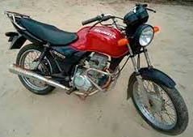
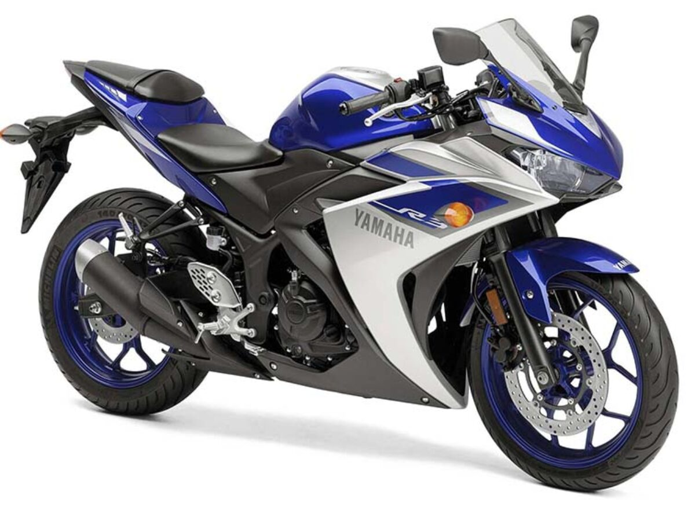
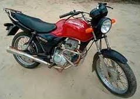
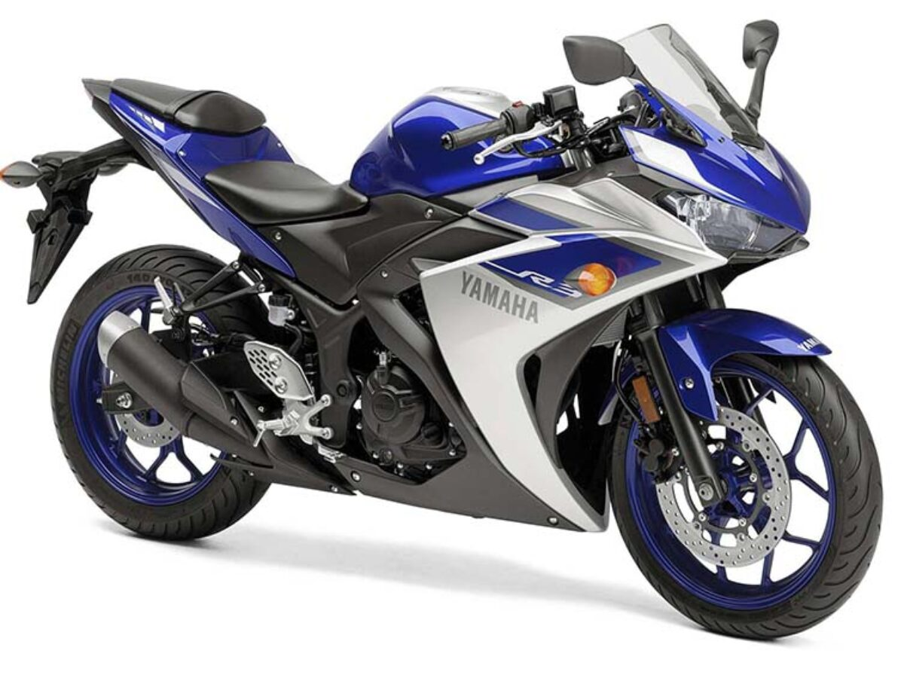

Moto: liberdade, terapia, estilo!!!
| Período | Modelo | Ilustração |
|---|---|---|
| 2008 - 2010 | Honda Fan Ks 125 |  |
| 2010 - 2012 | Yamaha Fazer 250 |  |
| 2012 - 2016 | Honda CBR 250r |  |
| 2016 - hoje | Yamaha YZF R3 |  |
| Período | Modelo | Ilustração |
|---|---|---|
| 2008 - 2010 | Honda Fan Ks 125 |  |
| 2010 - 2012 | Yamaha Fazer 250 | |
| 2012 - 2016 | Honda CBR 250r | |
| 2016 - hoje | Yamaha YZF R3 |  |